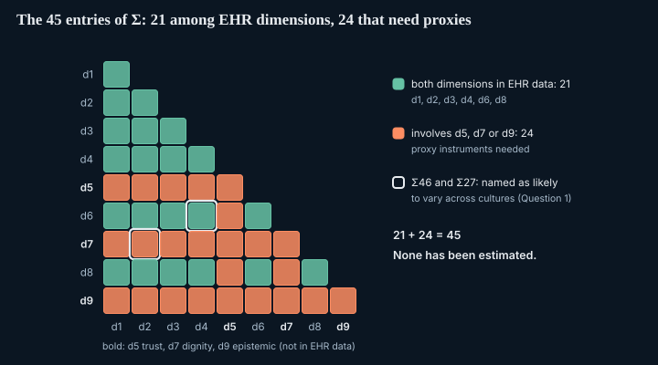

Chapter 18: Open Questions and the Frontier
“The honest end of a theoretical book is a list of what it does not know.”
The preceding seventeen chapters have constructed a geometric framework for clinical medicine: the nine-dimensional clinical decision complex, the $A^*$ pathfinding model, the QALY Irrecoverability Theorem, the gauge-invariance formulation of informed consent, the mathematical theory of moral injury, the Divergence Theorem for triage, the clinical Bond Index, and the No Escape Theorem for medical AI. The framework generates falsifiable predictions, connects to existing clinical data through validated instruments, and provides a mathematical vocabulary for the multi-dimensional reasoning that clinicians perform every day.
But the framework is incomplete. Important questions remain unanswered — some because the empirical work has not been done, some because the mathematics is not yet developed, and some because the questions are genuinely open, reaching beyond what any current framework can resolve. This final chapter catalogs those questions honestly, identifies the most promising research directions, and suggests what a complete geometric theory of clinical medicine would look like.
18.1 Can We Measure the Clinical Metric from Routine Clinical Data?
The Central Empirical Gap
The $9 \times 9$ covariance matrix $\Sigma$ is the framework’s central empirical object. Chapter 17 proposed experimental designs for estimating it — retrospective ethics consultation coding and prospective discrete choice experiments. These designs are feasible, but they have not been executed. Until $\Sigma$ is estimated, the framework’s quantitative predictions remain theoretical.
Specific Open Questions
Question 1: Is $\Sigma$ universal or context-dependent?
The framework assumes a single covariance matrix that applies across clinical contexts. But the cross-dimensional dependencies that $\Sigma$ encodes may vary:
-
Across specialties: Surgery and psychiatry may have different $\Sigma$ matrices. Surgery weights $d_1$ (outcomes) and $d_2$ (non-maleficence) heavily; psychiatry weights $d_4$ (autonomy) and $d_7$ (identity) heavily. The off-diagonal terms may differ correspondingly.
-
Across cultures: Japanese medicine, with its emphasis on family-centered decision-making, likely has different $\Sigma_{46}$ (autonomy $\times$ social impact) than American medicine. Middle Eastern medical cultures, with strong emphasis on religious identity, likely have different $\Sigma_{27}$ (rights $\times$ identity). Is there a universal clinical metric, or is the metric itself culturally determined?
-
Across patient populations: The covariance matrix as experienced by a disabled patient may differ from the matrix as experienced by a non-disabled patient — not because the manifold structure is different but because the dimensional weights are patient-specific. This raises the question of whether $\Sigma$ should be estimated at the population level (one matrix per culture/specialty) or at the individual level (one matrix per patient).
Question 2: Can $\Sigma$ be estimated from EHR data without prospective instruments?
The experimental designs in Chapter 17 require dedicated data collection — ethics consultation coding, discrete choice experiments, proxy instrument administration. Is it possible to estimate $\Sigma$ from routine EHR data alone, without prospective data collection?
The challenge is that three of nine dimensions ($d_5$: trust, $d_7$: dignity, $d_9$: epistemic status) are not routinely captured in EHRs. Natural language processing of clinical notes may provide partial proxies — mentions of “patient expresses concern about treatment,” “family meeting conducted,” “patient does not understand diagnosis” — but these are noisy and incomplete.
A promising approach: use the six dimensions that are measured in EHRs to estimate a $6 \times 6$ submatrix of $\Sigma$, then use proxy instruments on a subsample to estimate the remaining 24 entries and validate the NLP-based proxies against the instrument-based measurements.
Question 3: How stable is $\Sigma$ over time?
Clinical practice evolves. Patient expectations change. Institutional norms shift. The covariance matrix estimated from 2020 ethics consultations may not apply to 2030 clinical decisions. Is $\Sigma$ stable enough over time to support longitudinal policy evaluation, or must it be re-estimated periodically?

Figure 18.1. The 45 distinct entries of the nine-by-nine covariance matrix, one cell for each pair of dimensions and each diagonal entry. Section 18.1 proposes to estimate the six-by-six submatrix of the dimensions that electronic health records capture, which has 21 entries, and to use proxy instruments for the remaining 24, each of which involves trust, dignity or epistemic status. The two outlined cells are the entries Question 1 names as likely to differ between medical cultures. None of the 45 has been estimated.
18.2 What Is the Conservation Law for Clinical Reasoning?
Note (2026-11-26). Geometric Ethics withdrew Conservation of Harm as a thesis on 2026-06-19 (its ledger entry GE-HARM-CONSERVATION; the claim is absent from its text since version 1.24) and kept the weaker claim, the invariance of harm accounting under re-description. The sentence of this section that cited conservation of harm now cites the weaker claim. Candidate 3 below was offered as the clinical analogue of harm conservation; it loses that precedent and stands only as an open candidate. Candidates 1, 2 and 4, and the research program of Section 18.3, do not depend on the withdrawn claim and stand as open questions.
The Noether Connection
If the clinical Lagrangian is invariant under the medical BIP — clinical evaluations do not change when the patient is re-described in equivalent terms — then Noether’s theorem implies a conserved quantity. What is it?
In Geometric Ethics, the BIP-invariance of the moral Lagrangian is taken to imply the invariance of harm accounting: the accounting of harm cannot be changed by re-description, only by real transformation. (Earlier versions of that book stated this as a conservation law, Conservation of Harm, which it has withdrawn.) The clinical analogue would be a conservation law for some clinical quantity — but which one, if any?
Candidate Conservation Laws
Candidate 1: Conservation of clinical-moral status. The patient’s nine-dimensional attribute vector $\mathbf{a}(v)$ is preserved under re-description. The same patient described by two different physicians, in two different languages, using two different chart formats, should have the same attribute vector. This is definitional — it restates the BIP — and therefore does not constitute an independent conservation law.
Candidate 2: Conservation of manifold cost. The total clinical friction along any path is invariant under patient re-description. This is a stronger claim: not just that the patient’s state is invariant but that the cost of the path through the manifold is invariant. If true, it implies that the cost of treating a patient does not depend on how the patient is described — a testable claim that connects to the algorithmic bias literature (where costs demonstrably vary with description).
Candidate 3: Conservation of boundary penalty. The total boundary penalty incurred along a clinical path is invariant under re-description. This is the clinical analogue of the invariance of harm accounting in Geometric Ethics (stated there as harm conservation before that claim was withdrawn): the total moral cost of boundary crossings cannot be changed by re-describing the patient.
Candidate 4: No conservation law exists. The clinical Lagrangian may not be exactly BIP-invariant — there may be genuine BIP violations (cases where re-description legitimately changes the evaluation) that break the symmetry and prevent a conservation law from holding. Cultural variation in $\Sigma$ (Question 1 above) would imply that the Lagrangian is not universally invariant, and Noether’s theorem would not apply globally.
The question is open. Identifying the clinical conservation law — or proving that none exists — is a major theoretical challenge for the geometric programme.
18.3 The Noether Program: Deriving Conservation Laws from Clinical Symmetries
Beyond Candidates: A Research Program
The conservation law question (Section 18.2) is not merely academic. If a conservation law for clinical reasoning exists, it would have profound practical implications:
-
Diagnostic power. A conservation law would imply that certain quantities are preserved across clinical re-descriptions. If the patient’s total manifold position is conserved under re-description, then any clinical evaluation that violates conservation — that “creates” or “destroys” manifold position through re-description — is identified as a gauge violation.
-
Constraint on clinical AI. A conservation law would constrain what clinical AI systems can and cannot do. Just as conservation of energy constrains physical systems (you cannot build a perpetual motion machine), conservation of clinical-moral status would constrain clinical systems (you cannot improve a patient’s manifold position merely by re-describing them).
-
Measurement tool. Violations of conservation laws are empirically detectable. If a conservation law holds, its violations are markers of measurement error, gauge violation, or genuine clinical change — and distinguishing among these three is diagnostically valuable.
The research program to derive clinical conservation laws would proceed in three stages:
Stage 1: Formalize the clinical Lagrangian. The Lagrangian $\mathcal{L}$ for the clinical decision complex must be specified — what quantity is extremized along the clinical geodesic? The natural candidate is clinical friction $\text{CF}(\gamma)$, the total cost of the clinical path. The clinical geodesic minimizes $\text{CF}$, so $\text{CF}$ plays the role of the action in classical mechanics.
Stage 2: Identify the symmetries. The medical BIP states that the Lagrangian is invariant under patient re-description. This is a continuous symmetry group — the group of meaning-preserving transformations of clinical information. The group’s generators must be identified explicitly.
Stage 3: Apply Noether’s theorem. For each continuous symmetry of the Lagrangian, Noether’s theorem yields a conserved quantity. The conserved quantities are the conservation laws of clinical reasoning.
This program has not been completed. The clinical Lagrangian has been informally specified (as clinical friction) but not formally constructed with the variational machinery needed for Noether’s theorem. The symmetry group has been identified in principle (the medical BIP) but its generators have not been enumerated. The program is feasible — it requires the tools of variational calculus on simplicial complexes — but the mathematical development remains to be done.
18.4 Is the Clinical Manifold Riemannian?
The Riemannian Assumption
The clinical decision complex is formally a weighted simplicial complex (Section 4.1), but the framework’s geometric vocabulary treats it as if it had the structure of a smooth Riemannian manifold with a positive-definite metric. This assumption enables the use of geodesics, curvature, and parallel transport. But clinical decision-making may have geometric structures that Riemannian geometry cannot capture.
Three Non-Riemannian Possibilities
Possibility 1: Singularities.
Clinical decision-making may have singularities — points where the metric becomes degenerate (the determinant of $\Sigma$ approaches zero). A natural candidate: diagnostic uncertainty. When the diagnosis is unknown, the patient’s position on the clinical manifold is indeterminate — the metric in the diagnostic dimension becomes degenerate because the clinician does not know which region of the manifold the patient occupies.
If the clinical manifold has singularities, the geodesic equation breaks down at those points — the clinician cannot compute the minimum-cost path because the cost function is undefined. This may explain the phenomenon of “diagnostic paralysis” — the clinician’s inability to decide when the diagnosis is uncertain. The paralysis is not cognitive failure; it is a geodesic singularity.
Possibility 2: Non-Hausdorff topology.
In Riemannian geometry, the manifold is Hausdorff — any two distinct points can be separated by open neighborhoods. But clinical diagnosis may violate this: two diseases with overlapping presentations (e.g., pulmonary embolism and pneumonia in an elderly patient with dyspnea) may occupy regions of the manifold that cannot be separated by any diagnostic test. The clinical state is genuinely ambiguous — the patient is “between” two diagnoses in a way that the Hausdorff property does not allow.
Non-Hausdorff manifolds are mathematically exotic, but they may be clinically natural. The framework would need to be extended to accommodate diagnostic indistinguishability as a topological rather than merely epistemic phenomenon.
Possibility 3: Finsler structure.
The Riemannian metric is symmetric: the distance from state A to state B equals the distance from state B to state A. But clinical transitions may be asymmetric: the cost of transitioning from health to illness is not the same as the cost of transitioning from illness to health. Recovery is not the reverse of disease onset — it follows a different path through the manifold, with different costs on different dimensions.
A Finsler metric — a metric that depends not just on position but on direction — would capture this asymmetry. The clinical geodesic from illness to health would differ from the geodesic from health to illness, even between the same two points. This would explain the clinical observation that recovery paths are not reverse-disease paths: a patient who develops heart failure through a specific sequence of events does not recover by reversing that sequence.
Research Direction
Determining whether the clinical manifold is Riemannian, Finsler, or topologically exotic requires empirical data about the symmetry properties of clinical transitions. The discrete choice experiments proposed in Chapter 17 can test for asymmetry: do clinicians assign different costs to the transition $A \to B$ and the transition $B \to A$? If costs are systematically asymmetric, the Finsler hypothesis is supported.
18.5 How Does the No Escape Theorem Constrain Medical AI?
The General Theorem and Its Clinical Specificity
The No Escape Theorem (Chapter 16) states that an AI system constrained by the clinical decision complex cannot produce recommendations that cross sacred-value boundaries. The general theorem is a conditional theorem of Geometric Ethics (Theorem 18.1 there, conditional on its four requirements). The clinical-specific questions are:
Question 4: What are the precise sacred-value boundaries for medical AI?
The framework identifies three candidates: non-consensual experimentation ($\beta = \infty$), deliberate non-palliative killing ($\beta = \infty$), and patient instrumentalization ($\beta = \infty$). But the full set of sacred-value boundaries for medical AI has not been enumerated. Are there AI-specific boundaries — constraints that apply to artificial pathfinders but not to human clinicians?
Candidate: the opacity boundary — a constraint that an AI system’s recommendation must be explainable to the patient and the treating clinician. If the AI produces a recommendation that it cannot explain (the “black box” problem), the recommendation crosses a boundary on $d_9$ (epistemic status) and possibly $d_8$ (institutional legitimacy) that has infinite cost. An AI system constrained by the opacity boundary cannot produce unexplainable recommendations, regardless of their $d_1$ optimality.
Question 5: What are the engineering requirements for manifold-constrained AI?
The No Escape Theorem is a mathematical result about the properties of pathfinding on a manifold with infinite-cost boundaries. Translating this result into engineering requirements for actual AI systems is a separate challenge. What does a manifold-constrained medical AI look like in practice?
Possibilities include: - Hard-coded boundary constraints in the AI’s reward function — but these are parametric guardrails, not structural constraints, and can be breached by distribution shift. - Manifold-embedded architectures where the AI’s output space is structurally limited to the manifold’s interior — but this requires encoding the manifold’s geometry into the AI’s architecture, which has not been done. - Proof-carrying recommendations where each AI recommendation comes with a certificate that no sacred-value boundary was crossed — but this requires a formal verification system that does not yet exist for clinical AI.
Question 6: Can an AI system be provably incapable of crossing sacred-value boundaries?
This is the strongest possible safety guarantee: not just that the AI is unlikely to cross boundaries, or that it will be caught if it does, but that crossing is impossible by the architecture of the system. The No Escape Theorem says this is mathematically possible. Whether it is engineerable is an open question in AI safety.
18.6 Can the Moral Injury Index Be Validated Prospectively?
The Decisive Test
The Moral Injury Index $\text{MI}(P)$ is designed to be computed before a policy is implemented, predicting the moral injury that the policy will produce. The decisive validation test is:
- Compute $\text{MI}(P)$ for a proposed policy.
- Implement the policy.
- Measure actual moral injury in the clinician workforce.
- Compare predicted and actual MI.
If predicted and actual MI correlate ($r > 0.5$), the Moral Injury Index has predictive validity and can be used as a prospective policy evaluation tool. If they do not correlate, the Index’s mechanism — that moral injury is a function of boundary-crossing frequency and clinician $\beta_k$ profiles — is wrong or inadequately operationalized.
Question 7: Has any institution used the framework to redesign a policy and measured the resulting change in clinician MI?
This is the ultimate applied test. The framework does not merely describe moral injury — it claims to predict it and to guide prevention. An institution that computes $\text{MI}(P)$, redesigns the policy to reduce boundary crossings, and measures a reduction in clinician moral distress would provide the strongest possible evidence for the framework’s practical value.
No such test has been conducted. It requires institutional buy-in (a hospital willing to compute the MI Index, redesign a policy, and measure outcomes), clinical ethics expertise (to code boundary crossings and estimate $\beta_k$ distributions), and longitudinal data collection (moral distress measurements before and after the policy change). The requirements are feasible but demanding.
18.7 What Is the Right Dimensionality?
Nine Dimensions: Sufficient or Not?
The nine dimensions of the clinical decision complex are inherited from the nine-dimensional moral manifold of Geometric Ethics. They were not derived from clinical data — they were derived from the structure of moral reasoning and instantiated for clinical contexts. The question is whether nine dimensions are sufficient for clinical medicine, or whether the clinical domain requires additional dimensions.
Candidate Additional Dimensions
Time pressure. Clinical decisions made under time pressure (emergency triage) differ from decisions made at leisure (elective surgery planning). The current framework captures time pressure indirectly — through its effect on heuristic quality (time pressure degrades $h(n)$) and through the distinction between acute and chronic settings. But time pressure may be an independent dimension that affects the clinical manifold’s structure in ways that the current nine dimensions do not capture.
Resource scarcity. The availability of resources (ventilators, ICU beds, medications) constrains the set of feasible paths on the manifold. The current framework models scarcity as a constraint on the triage optimization ($\sum_i r(\gamma_i) \leq R$). But scarcity may also affect the edge weights — the moral cost of a treatment is higher when the treatment consumes a scarce resource, even for an individual patient outside the triage context.
Team dynamics. Clinical decisions are rarely made by a single clinician. The interaction between team members — attending, resident, nurse, social worker, chaplain — introduces a multi-agent dimension that the current framework models as a single decision-maker with a composite heuristic. The team dynamics may be an independent dimension, especially in settings where team conflict affects clinical decisions.
Question 8: Are some dimensions redundant in specific clinical contexts?
Conversely, some of the nine dimensions may be redundant — highly correlated or functionally identical — in specific clinical contexts. In routine outpatient care (e.g., managing a patient’s hypertension), dimensions $d_3$ (justice), $d_6$ (social impact), and $d_8$ (institutional legitimacy) may be minimally activated, reducing the effective dimensionality to six or fewer. If the manifold’s effective dimensionality varies by context, the framework should acknowledge this variation — and the measurement strategy should accommodate it.
18.8 Cross-Cultural Variation in the Metric
The Empirical Mapping Challenge
The boundary penalties $\beta_k$ and the covariance matrix $\Sigma$ are not universal constants. They vary across clinical cultures:
-
Autonomy-centered cultures (United States, Northern Europe): High $\beta_{\text{consent}}$, high weight on $d_4$. Patient autonomy is the dominant value; paternalism is strongly penalized.
-
Family-centered cultures (Japan, much of East Asia, Mediterranean cultures): Lower $\beta_{\text{consent}}$ for family-mediated consent, high weight on $d_6$ (social and family impact). The family is the unit of decision-making, not the individual.
-
Community-centered cultures (many Indigenous traditions, some African and South Asian cultures): High weight on $d_6$ and $d_3$ (justice at the community level). The community’s needs may override individual autonomy in ways that autonomy-centered cultures would find unacceptable.
-
Religious cultures (many Middle Eastern and South Asian contexts): High weight on $d_7$ (identity as tied to religious practice) with specific boundary penalties for interventions that conflict with religious obligations.
Question 9: Can the framework accommodate cross-cultural variation without relativism?
The framework must navigate between two extremes: universalism (one set of $\beta_k$ values for all cultures — which ignores genuine cultural variation) and relativism (every culture’s $\beta_k$ values are equally valid — which provides no basis for identifying unjust practices within any culture).
The geometric framework offers a middle path: the manifold structure is universal (nine dimensions, the BIP, the pathfinding model), but the metric is culturally variable ($\Sigma$ and $\beta_k$ are context-dependent). This means that the framework can accommodate cultural variation — different cultures assign different costs to different boundary crossings — while maintaining the structural apparatus that enables cross-cultural comparison (the Bond Index, the gauge-invariance test, the Moral Injury Index).
The cultural variation must be mapped empirically. This requires estimating $\Sigma$ in multiple cultural contexts and identifying which entries are culturally invariant (if any) and which are culturally determined.
18.9 The Frontier, Honestly Stated
The geometric framework for clinical medicine is, at this writing, a theoretical structure with strong connections to existing clinical data but limited direct empirical validation. The central claims are:
- Clinical decisions have nine-dimensional structure. Status: Theoretically grounded, empirically untested at scale.
- Clinical reasoning is $A^*$ pathfinding on the clinical manifold. Status: Formally developed, behaviorally plausible, not directly validated.
- The QALY destroys irrecoverable information. Status: Proved mathematically, consistent with the QALY critique literature.
- Moral injury is cumulative forced boundary crossing. Status: Consistent with the existing moral injury literature, generates novel predictions.
- The Bond Index detects structural injustice. Status: Formally defined, operationally feasible, not yet computed from clinical data.
- Consent is a gauge-invariance condition. Status: Formally developed, untested; illustrated by a hypothetical pilot (Section 17.6), full study not yet conducted.
The framework’s claims are specific enough to be tested and falsified. The experimental designs exist. The instruments are available. What is needed is the empirical work — the studies, the data, the validation.
18.10 Sarah’s Grant Proposal
Sarah, now an attending physician and ethics committee member, writes a grant proposal to the National Institutes of Health.
The title: “Estimating the Clinical-Moral Covariance Matrix: A Multi-Site Prospective Study.”
The aims: 1. Estimate $\Sigma$ from ethics consultation coding at three academic medical centers. 2. Validate the estimate using a prospective discrete choice experiment with 300 clinicians. 3. Compute the Bond Index for each institution’s triage, consent, and discharge policies. 4. Test Predictions 1–6 from the falsifiable prediction suite.
The budget: $1.2 million over three years. Two full-time research coordinators, one statistician, 100 clinician-hours of vignette coding, IRB approval at three sites.
Sarah does not know whether the grant will be funded. She does not know whether the predictions will be confirmed. She knows that the manifold exists — she has been pathfinding on it for ten years. She knows that her clinical judgment, her moral injury, her consent conversations, and her triage decisions all have geometric structure. The question is whether the structure can be measured.
She ends the proposal with a sentence from the GCE paper:
“The manifold exists. The clinicians are already pathfinding on it. Now there is a mathematics for what they do.”
The mathematics is written. The empirical test remains. Sarah intends to conduct it.
Chapter Summary
The geometric framework for clinical medicine faces seven open questions at the frontier: whether the $9 \times 9$ covariance matrix $\Sigma$ is universal or context-dependent, what conservation law (if any) the medical BIP implies, whether the clinical manifold is Riemannian or requires more exotic geometry, what engineering requirements the No Escape Theorem imposes on medical AI, whether the Moral Injury Index can be validated prospectively, whether nine dimensions are sufficient for clinical medicine, and how cross-cultural variation in the metric should be mapped empirically. Each question is specific, answerable, and connected to a feasible research program. The framework’s status is honest: it is a theoretical structure with strong connections to existing evidence, specific falsifiable predictions, and an empirical program that can validate or refute its claims. The geometry has been written. The measurement awaits.
-
The question of whether the clinical manifold is Riemannian or Finsler has a practical implication: if the manifold is Finsler (asymmetric), the clinical geodesic from illness to health is different from the geodesic from health to illness, and treatment protocols should reflect this asymmetry. Current clinical practice does, in fact, recognize this asymmetry — recovery protocols differ from disease-onset trajectories — but without the geometric vocabulary to explain why. ↩
-
The cross-cultural variation question connects the clinical framework to the broader Geometric Series. If the moral manifold’s metric is culturally variable, is there a “most natural” metric — a metric that is, in some sense, objectively correct — or is the metric choice irreducibly cultural? This is the medical instantiation of the moral realism question that pervades the Geometric Ethics literature. ↩
-
Sarah’s grant proposal is fictional, but its design is real. Every experimental design described in this chapter is feasible with existing instruments, standard sample sizes, and available clinical data. The gap between theory and evidence is not methodological — the methods exist — but logistical: someone must do the work. ↩